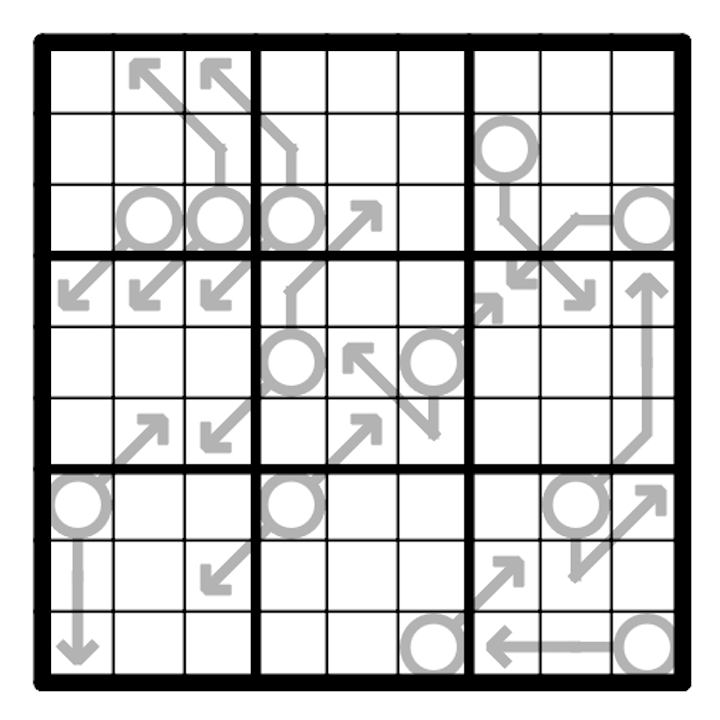

Place the numbers from 1 to 9 exactly once in every row, column, and box. Numbers along an arrow must sum to the number in the attached circle. Multiple arrows stemming from the same circle are to be treated individually. SudokuPad penpa+ 